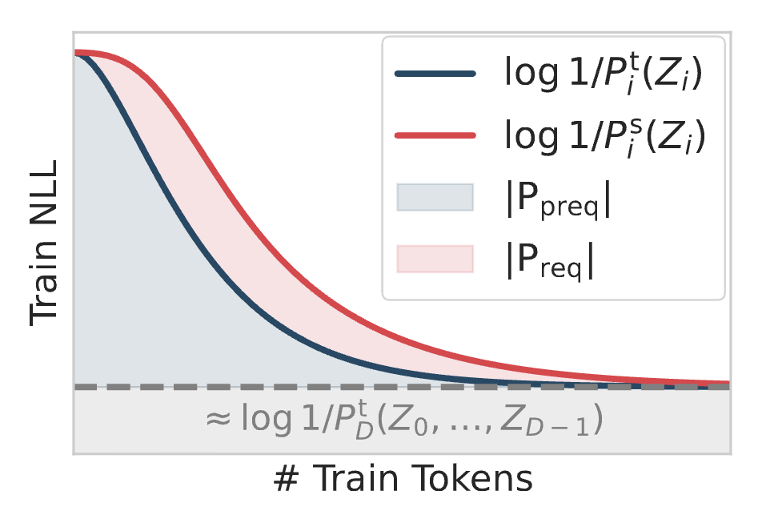
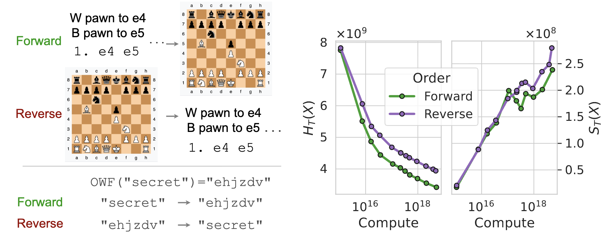
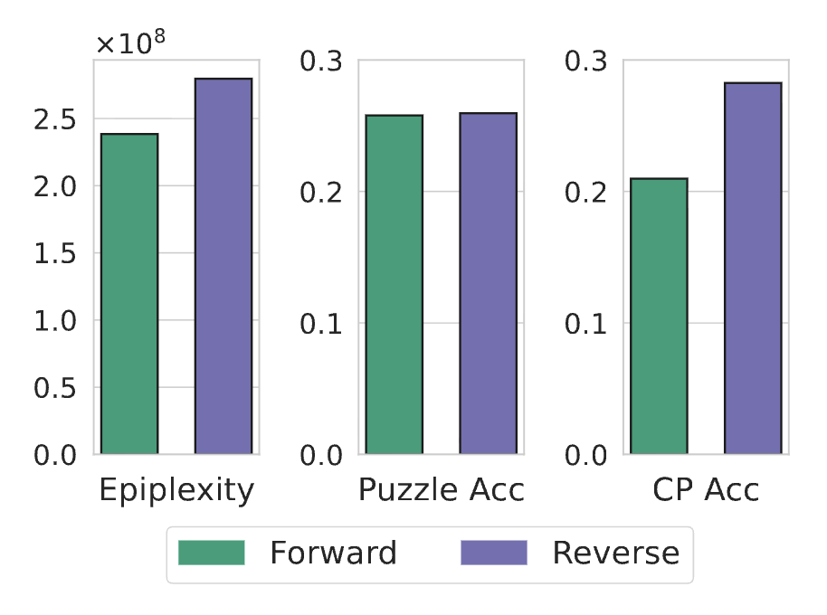

1/29/2025
Unless you are a whiz at algorithmic information theory, you will find it helpful to read Interestingness Part 1 first.
In the previous post, we discussed classical notions of quantifying information content via information theory and algorithmic complexity. We found that entropy was close to the Kolmogorov complexity at the sample level, whereas Kolmogorov complexity of the distribution captures something else. For example, the uniform distribution is high entropy and high Kolmogorov per sample (suggesting high random information) and low Kolmogorov for the distribution (suggesting low structural information). However, these classical notions would assign low random information to pseudo-random number generators and low structure to the distribution of math proofs (discussed more in depth later).
In this post, we cover how epiplexity (Finzi et al, 2026) correctly resolves these paradoxes via computational constraints. Moreover, we will cover the interesting implications for whether machine learning algorithms extract structure from data.
We first go over two examples that motivate the failures of distributional complexity and entropy. This is a rearrangement of the three paradoxes from the original paper.
Between both examples, a common theme is that the intuition deviates from the theory due to time constraints. Epiplexity addresses this by thinking about learning under compute constraints. We first introduce learning.
So far, our notions of random information (entropy) and structural information (minimum program length for the distribution) have been kept separate from each other. However, when selecting models according to data (i.e. learning), we are interested in balancing both. This classical idea of Occam's razor (selecting the simplest hypothesis that explains the data) can be formalized as minimizing the total description length of describing a hypothesis and describing the data under this hypothesis. More formally, for candidate programs $\mathcal{H}$, the minimum description length is
$$L(x) = \min_{h\in\mathcal{H}} |h| - \Eof{x\sim P}{\log P_h(x)}$$
We can decompose the total description length at the minimizer into its structural component $|h|$ and random component $- \Eof{x\sim P}{\log P_h(x)}$ which we will denote $S_{\infty}(P)$ and $H_{\infty}(P)$ (suggestive of future notation).
The only difference between MDL is that we will constraint the candidate programs to run in time less than $T(n)$ for length $t$ inputs.
$$L_T(X) = \min_{H \in \mathcal{H}_T} |h| - \Eof{x\sim P}{\log P_h(x)}$$
Similar to MDL we will capture the structural information $|h|$ as the epiplexity $S_T(P)$ and the random information $- \Eof{x\sim P}{\log P_h(x)}$ as the time-bounded entropy $H_T(P)$.
This notion resolves both of the failures we provided earlier.
One naive way to estimate the program length is count the number of bits necessary to encode the architecture and parameters. However, the authors point out this might significantly overestimate the length of the shortest program since it is known that neural network weights are highly compressible.
One classical scheme to encode the model is via prequential coding. In this scheme, we only encode the program necessary to initialize the model and encode the data points with respect to the model over the course of training. More specifically,
The data contained above can be executed as a program to produce the final model: initialize the model, decode the original sample with respect to the current checkpoint, take a gradient update, and repeat for all the data points. However, this coding scheme includes the bits for compressing both the model and the entire dataset. As a post-hoc correction, one can approximate the bits of the $M$ images via entropy coding with the final model checkpoint $Q_M$. Therefore, we can approximate the model description length as
$$\sum_{i\in[M]} -\log Q_i(x_i) + \log Q_M(x_i)$$
or, the area under the loss curve until the terminating loss as visualized as the blue region in Figure 1.

The paper notes that the above coding scheme has a lot of heuristics and alternatively considers requential coding (red region, employing a plausibly better set of heuristics). Fortunately, the authors find that the two metrics correlate empirically, even if requential coding is $2-10\times$ shorter description lengths. Nonetheless, all their main experiments only use prequential coding.
The paper has a couple of interesting experiments demonstrating possible applications for epiplexity in the context of data selection. A couple that are worth reading about are the cellular automata as well as what scaling laws imply about epiplexity as a function of compute and modality.
We will cover what I think is the most interesting experiment for the paper surrounding chess. Consider two distinct formats for chess pre-training, as visualized in Figure 2 left: seeing the moves of a game followed by the final chess board (forward), or seeing the final chess board followed by the initial moves (reverse). Both directions have the same loss minimizer since the factorization of the probability distribution (i.e. the order of the tokens) doesn't change the underlying distribution. However, predicting the board given the moves is more computationally easy relative to inferring the moves given the board by marginalizing over all possible games. This is related to a fact that the epiplexity of $f^-1$ is not necessarily close to the epiplexity of $f$ (on the other hand, Kolmogorov complexity barely changes thanks to Levin search).
When training on this task, the total loss is higher for the reverse representation, as expected. However, when decomposing into epiplexity and time-bounded entropy, one finds that the epiplexity is higher for reverse training (Figure 2, middle). Intuitively, this captures that the model trained on reverse chess boards has extracted more structure from the task as its more computationally difficult. When testing on OOD chess tasks, the reverse model performs better than the forward model, suggesting that the reverse network generalizes better (Figure 2, right).


Hopefully you found that epiplexity offers a fresh take on generalization as training for the maximum amount of extracted information. Thank you for reading, and feel free to reach out with any questions or thoughts!